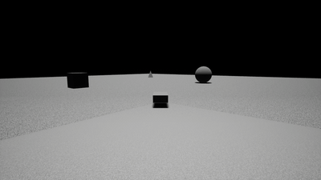
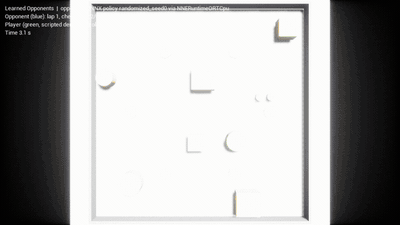
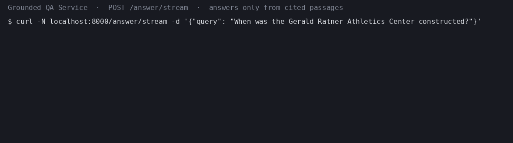
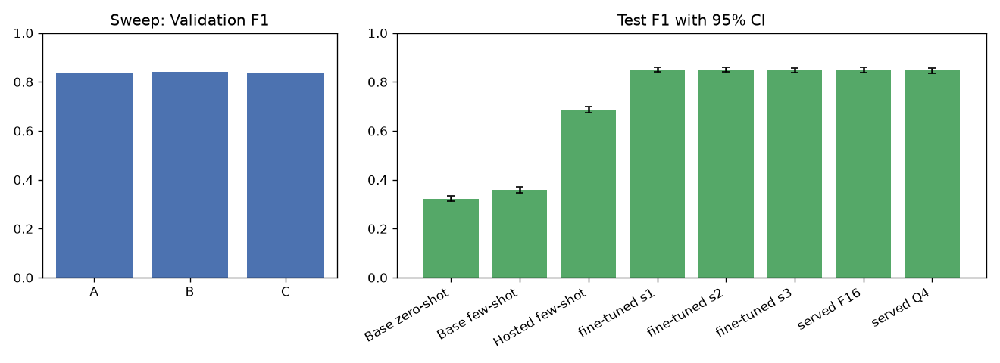
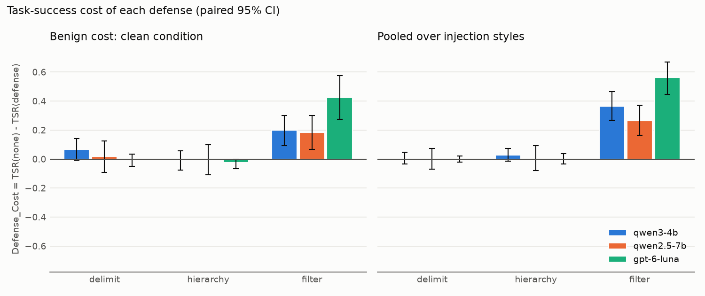
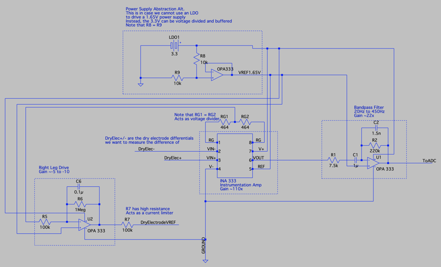

Robotics / Simulation / Test Resume
RoboticsROS 2/Nav2 fault-injection harness, Unreal Engine sensor simulator on ROS 2, GPU-parallel RL, embedded C (senior design).
Computer Engineering (Michigan State University, Dec 2025, GPA 3.31) - Robotics/Simulation/Test + AI/ML
Computer engineer who builds simulation, test and autonomy software and evaluated ML systems: a ROS 2/Nav2 fault-injection harness, an Unreal Engine sensor simulator on ROS 2, GPU-parallel RL, LLM fine-tuning and serving, grounded RAG and agent prompt-injection benchmarks.
Two track-specific 2026 resumes. View in-browser or download the PDF.
ROS 2/Nav2 fault-injection harness, Unreal Engine sensor simulator on ROS 2, GPU-parallel RL, embedded C (senior design).
LLM fine-tuning, quantization and serving, grounded RAG with citation validation, agent prompt-injection benchmarks, GPU-parallel RL.
MSU transcript (PDF). Aug (2023) - Dec (2025).
Built with an AI coding agent under spec-driven development; every number below comes from a seeded script in the repository. Earlier projects (RAG-Lite, 2D perception + control, CartPole PPO and more) are on my GitHub.
Scenario-based test system for Nav2 on TurtleBot 4: seeded scenario generator, lidar fault injector (noise, dropout, latency, freeze, sector blackout) and a ground-truth-only oracle.

Drivable Unreal Engine 5.8 rover whose lidar, camera, IMU and GPS share a seeded noise/dropout/latency pipeline and stream to ROS 2 Jazzy over rosbridge.

PPO navigation policies trained in 4,096 GPU-parallel MuJoCo Warp arenas, baseline vs. domain-randomized, then exported to ONNX and run as the opponent in an Unreal Engine 5.8 game.

RAG service that answers only from retrieved passages, validates every sentence's citation and refuses below a confidence threshold tuned on a held-out split.

LoRA fine-tune of Qwen2.5-1.5B-Instruct for intent-and-slot extraction on MASSIVE, quantized to GGUF and served behind an OpenAI-compatible llama-server endpoint.

Reproducible benchmark of how often tool-using LLM agents follow instructions planted in tool outputs, and what each defense costs: 40 AgentDojo tasks, 5 injection styles, 4 defenses, 3 models.

Sole software member of a four-person Texas Instruments-sponsored senior design team (Fall 2025): wrote C firmware turning filtered surface-EMG into real-time game input for four modes.
Fascinated by AI/ML well before today’s public LLM wave. I’ve been coding since learning through games and projects. I focus on robotics simulation/test/autonomy and AI/ML engineering. This page is intentionally minimal: optimized for fast scanning and direct links to working repos/demos.